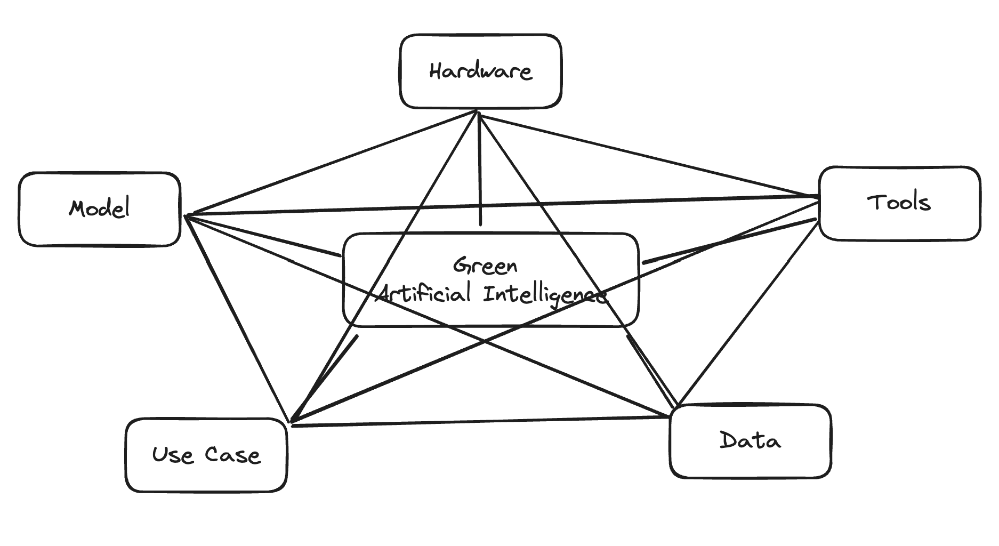

Interplay of Influence Factors #

Central Question
- How do the different Influence Factors interact with each other? And why does it matters?
- What scientific Question result from this?
Interplay Between Influence Factors #
Understanding the interplay between various influence factors is crucial for optimizing the ecological sustainability of AI systems. These factors, categorized into Use Case, Model, Data, Hardware, and Tools, do not operate in isolation. Instead, they interact in complex ways that can either amplify or mitigate their individual impacts on the environmental footprint of AI applications. The following illustrates some of those interplays.
Use Case - Model #
The Use Case of an AI application significantly determines the model’s characteristics. For example, an AI system designed for real-time language translation needs a highly efficient, fast model, which might be more complex and energy-intensive. Conversely, a less time-sensitive use case, such as analyzing historical data trends, can utilize simpler models that are less demanding on computational resources. Thus, aligning the model complexity with the specific needs of the use case can prevent unnecessary energy consumption and promote sustainability.
Model - Data #
The size and complexity of the model directly influence the data requirements. Larger models typically require more extensive and higher-quality datasets for training, leading to increased energy consumption during data collection, preprocessing, and storage. However, employing techniques such as transfer learning or using pre-trained models can reduce the need for large datasets, as these models have already been trained on vast amounts of data and only require fine-tuning. This interplay suggests a strategy of balancing model complexity and data efficiency to minimize environmental impact.
Data - Hardware #
Data processing demands significantly affect hardware requirements. High-volume, high-precision datasets necessitate advanced hardware capable of handling extensive computational loads efficiently. This includes GPUs or TPUs, which are designed to process large datasets quickly but may consume more energy. On the other hand, using lower precision data types or reducing dataset sizes can allow for the use of more energy-efficient hardware, such as CPUs or specialized low-power chips. Thus, optimizing data characteristics can lead to more sustainable hardware choices, reducing overall energy consumption.
Hardware - Tools #
The choice of tools, including AI frameworks and development environments, interacts closely with the hardware used. Some tools are optimized for specific hardware, maximizing efficiency and reducing energy consumption. For instance, TensorFlow and PyTorch can leverage the parallel processing capabilities of GPUs, making them suitable for energy-intensive training tasks. Additionally, tools that offer better resource management features can help schedule computations during periods of low grid demand, further optimizing energy use. Therefore, selecting the right tools in conjunction with appropriate hardware can significantly enhance the sustainability of AI systems.
Tools - Use Case #
The development methodologies and frameworks chosen also impact the ecological footprint through their influence on the use case. Agile methodologies, for instance, promote iterative development and frequent reassessment, potentially leading to more efficient use of resources by quickly identifying and rectifying inefficiencies. However, without careful management, these frequent iterations can increase energy consumption. Balancing the benefits of agile methods with strategies to minimize redundant computations is essential for maintaining sustainability.
Integrated Approach for Sustainable AI #
Achieving ecological sustainability in AI requires an integrated approach that considers the interplay between these influence factors. By carefully aligning use case requirements with model complexity, optimizing data characteristics for efficient hardware usage, and selecting appropriate tools, it is possible to minimize the environmental impact. Moreover, this integrated approach promotes the development of AI systems that not only perform effectively but also align with broader sustainability goals.
In conclusion, the interplay between influence factors in AI systems highlights the need for holistic consideration in the design and implementation of sustainable AI solutions. By recognizing and optimizing these interdependencies, stakeholders can develop AI applications that are both ecologically responsible and technically robust.